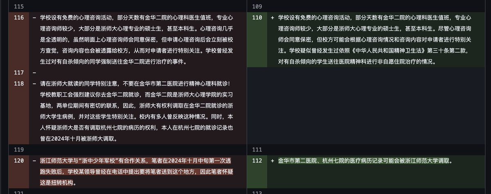

時璃風医詩🍥🌈
@hagishigure
又被人推到我tl上刷到第二次了喵。
我還是要評價一下喵。
RLE這件事本質是主觀的喵。
如果沒有了主觀評價那麼就可以把站點刪掉了喵。

北雁云依 - 21018365486@o3o.ca
@Beiyan_Yunyi
在首负与工作人员 A 并不愿意先告知原作者的情况下，我不同意对条目的撤回，并且因此立即被“首负”免去 RLE wiki 站长的身份。A 空降 RLE wiki 成为站长，并且立即展开了对所有涉及“对大学主观评价”（实际指负面评价）的内容的大清洗。
在一天之内，有 25 所大学的条目被 A 无告知修改。（左旧右新） https://t.co/AgQbKk5GD5